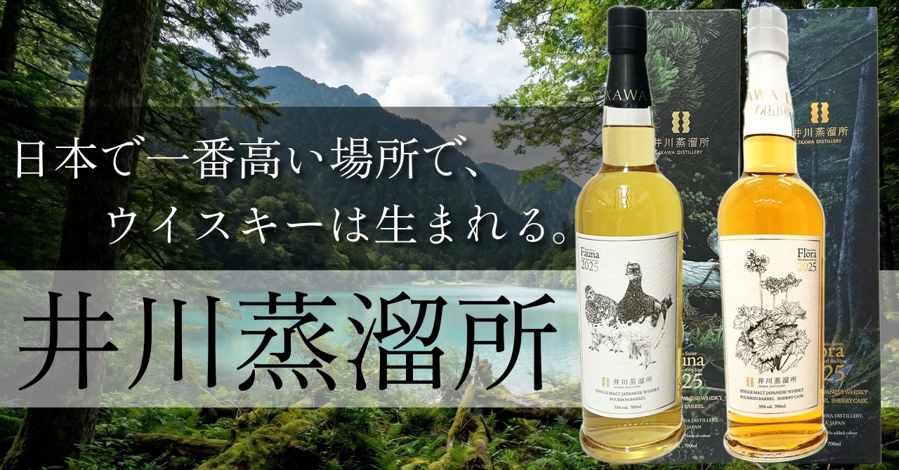

Category


Articles

🍶 Japanese Sake — Editor's Pick
丹沢の清水が育む誠実な酒
相模灘
神奈川県相模原市の久保田酒造が1844年から醸す地酒「相模灘」。丹沢山系の清冽な湧水と食中酒への一徹した哲学が宿るラインナップをご紹介します。


🥃 Whisky — Editor's Pick
日本で一番高い場所で、
ウイスキーは生まれる。
井川蒸溜所
静岡・南アルプスの標高1,200mに佇む、日本最高地点の蒸溜所「井川蒸溜所」。製紙業から転身した十山株式会社が、南アルプスの水と木で造るジャパニーズシングルモルトを、蒸溜所の物語とともに深く掘り下げます。

🍷 Wine — Editor's Pick
ROBERT MONDAVI
その夢は、続いている。
カリフォルニアワインを世界の舞台に押し上げた男、ロバート・モンダヴィ。プライベートセレクションの赤白からウッドブリッジ、そして革新のバーボンバレルエイジドまで厳選5本をご紹介します。

🍶 Japanese Sake — Editor's Pick
明鏡止水
くもりなき心で醸す
信州佐久が生む銘酒
長野県佐久市・大澤酒造が元禄2年から醸す銘酒「明鏡止水」。澄みきった蓼科の伏流水と丁寧な酒造りが生む、くもりなき味わいの名作たちをご紹介します。

🥃 Brandy — Editor's Pick
【大人のコニャック入門】
フランスが誇る五つの琥珀
フランス・コニャック地方が誇る5大ブランドのVSOPを徹底比較。ヘネシー、レミーマルタン、カミュ、クルボアジェ、マーテル——それぞれが積み重ねた歴史と哲学が、VSOPというグレードにどう表れているかを解説します。

🥃 Whisky — Editor's Pick
魂を揺さぶる
アイラの煙
Ardbeg
アイラ島を代表するシングルモルトウイスキー、アードベッグ。1815年創業の蒸留所が生み出す強烈なピートスモークと、唯一無二のラインナップを厳選してご紹介します。

🍷 Wine — Editor's Pick
LOUIS JADOT
一世紀半、変わらぬ答え
1859年創業、フランス・ブルゴーニュの名門ネゴシアン兼ドメーヌ、ルイ・ジャド。テロワールの個性を最大限に引き出す哲学のもと醸される赤・白ワインを厳選してご紹介します。

🍶 日本酒 — Editor's Pick
栃木のドメーヌが生む
甘酸の美学
仙禽
栃木県さくら市・株式会社せんきんが醸す仙禽。仕込み水と同じ水脈の田んぼで米を育てるドメーヌ化の哲学と、甘酸っぱくジューシーな味わいで日本酒界に唯一無二の存在感を放つ各シリーズをご紹介します。

🥃 Whisky — Editor's Pick
KILCHOMAN
アイラの農場から生まれた
煙と塩の物語
2005年、アイラ島最西端に生まれた農場蒸留所キルホーマン。大麦の栽培から瓶詰めまでを島内で完結させる哲学と、重厚なピートスモークが宿る個性的なラインナップをご紹介します。

🍸 Gin — Editor's Pick
季の美
「日本に生まれて良かった。」
そう思える一杯
京都蒸溜所が手がけるジャパニーズクラフトジン「季の美」。米スピリッツと11種の京都産ボタニカルが織りなす洗練されたラインナップを、クロフク編集長が厳選紹介します。

🍷 Wine — Editor's Pick
Cono Sur
この値段でこのクオリティはおかしい
チリ・コルチャグア・ヴァレー発、自転車ラベルでおなじみのコノスル。1993年創業以来、チリで初めて高品質なピノ・ノワールを世界に輸出したワイナリーが手頃に楽しめる5本をご紹介します。

🍶 Japanese Sake — Editor's Pick
美しさと旨さが同居する山口の秘宝
東洋美人
山口県萩市の澄川酒造場が醸す「東洋美人」。初代が亡き妻を偲んでつけた名を持つこの蔵は、2013年の豪雨被害から見事に復活。醇道一途シリーズをはじめ、純米大吟醸・辛口など個性豊かな720ml商品を厳選してご紹介します。

🥃 Whisky — Editor's Pick
ピート好きは絶対ハマる！
アイラの最強ブレンドウイスキー
BIG PEAT
ダグラスレイン社が誇るアイラ・ブレンデッドモルト『BIG PEAT』。薬品のような独特の香りが魅力。Ardbeg、Caol Ila、Bowmore、Port Ellen...アイラの全てが詰まった究極の一本。5つのバリエーションから自分好みの一本を見つけてください。

🍷 Wine — Special
【神の雫 アニメ放送記念】
飲んでみたくなるワインガイド
漫画『神の雫』の第1巻～第5巻に登場する12本のワインを厳選紹介。神咲雫と一緒にワインの世界への扉を開く、当時の物語を追体験できるワインガイドです。

🍺 Beer — Editor's Pick
スコットランドのパンクブルワリー
BREWDOGの世界へようこそ！
「常識に逆らう」をキーワードに、個性的でパンクなビールを生み出し続けるスコットランドのクラフトビール「BrewDog」。PUNK IPAから究極の1本BORN TO DIEまで、ブリュードッグの魅力を13本厳選してご紹介します。

🍷 Wine — Editor's Pick
酒販業界の中の人が本音で選ぶ、
3,000円以下の赤ワイン10選
「ワイン選びは冒険だ」という想いから、フランス・イタリア・アメリカ・チリ・日本の5つの産地から、それぞれの個性を持つ赤ワイン10本を厳選しました。世界の多様な味わいを3,000円以下で体験できます。

🍶 Sake — Editor's Pick
酒販業界の中の人が本音で選ぶ、
3,000円以下の日本酒10選
「日本酒を飲んでみたいけど、どれを選べばいいかわからない」そんな方へ。東北・北陸・関東東海を横断し、酒販の現場で働くクロフク編集長が本音で厳選した、コスパ最強の10本をご紹介します。

🥃 Whisky — Editor's Pick
酒販業界の中の人が本音で選ぶ、
3,000円以下のウイスキー10選
「ウイスキーを飲んでみたいけど、どれを選べばいいかわからない」そんな方へ。スコッチ・アイリッシュ・ジャパニーズを横断し、酒販の現場で働くクロフク編集長が本音で厳選した、コスパ最強の10本をご紹介します。
酒販業界に5年。営業・EC運営を通じて1000本以上のお酒と向き合ってきた経験から、本当においしい一本を届けます。